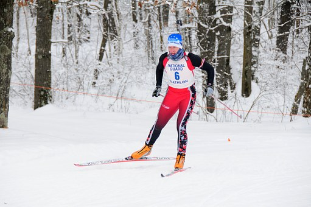
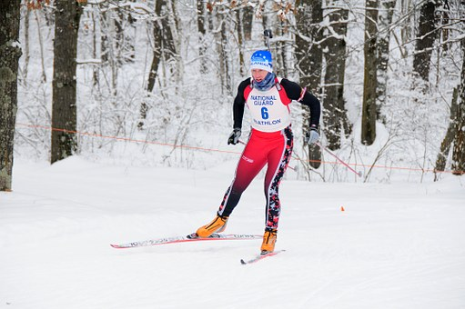

Image du ski de fond
Le ski est constitué de plusieurs épreuves/courses : le sprint, etc...
Toutes les techniques de ski de fond sont autorisées dans le biathlon. Le style "skating" appelé
aussi "pas de patineur" étant préféré car plus rapide et nécessitant moins de mouvement du haut du corps.
Le matériel de ski nécessaire selon l'importance :
Pour aller à la page du tir à la carabine, cliquez ici.

Image du ski de fond
Pour retourner à la page d'accueil (index), cliquez ici